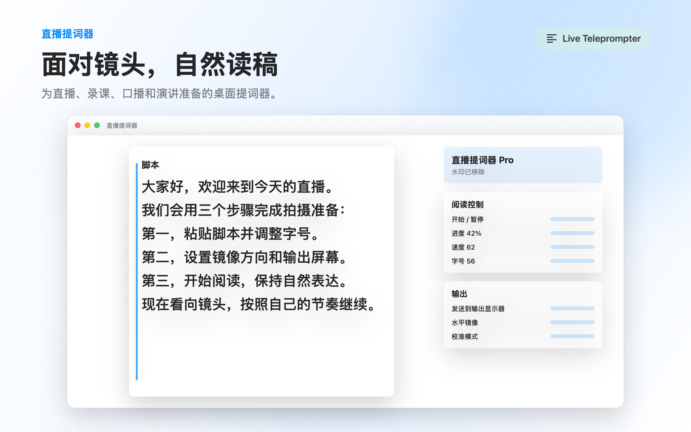
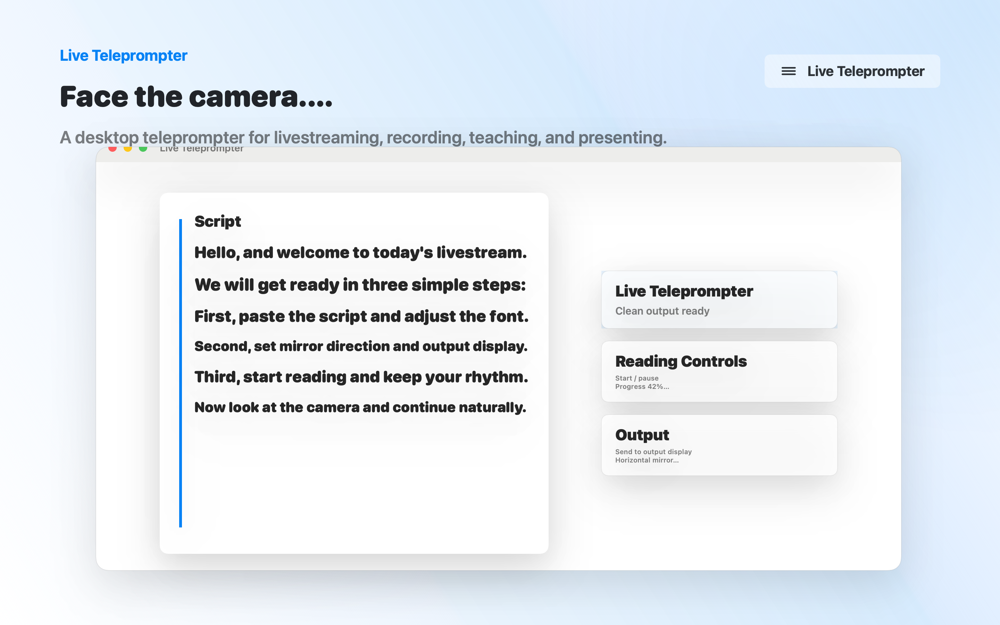

在左侧编辑区准备稿件，随时清空、重置和调整阅读位置。Prepare your script in the editor, then reset, clear, and reposition when needed.
macOS 桌面提词器 Desktop teleprompter for macOS
面向摄像头，自然读稿。 Look into the camera. Read naturally.
直播提词器适合录制、直播、教学和演讲。准备脚本，控制阅读节奏，把镜像后的文字发送到输出显示器。 Live Teleprompter helps you record, livestream, teach, and present. Prepare a script, control reading pace, and send mirrored text to an output display.


为真实上镜场景设计Built for real on-camera sessions
从粘贴脚本到输出显示器，核心控制都在一个安静、直接的桌面工作区里。 From pasted scripts to output displays, the essential controls stay in one calm desktop workspace.
开始、暂停、速度、字号和进度控制集中在阅读控制区，适合反复录制。Start, pause, speed, font size, and progress controls are ready for repeated takes.
选择外接屏或主屏，打开独立输出窗口，把提词内容发送到提词器玻璃前。Choose a display and open a separate output window for teleprompter glass setups.
支持水平镜像，Pro 可启用垂直镜像；校准模式帮助你确认反射方向。Use horizontal mirror, unlock vertical mirror with Pro, and verify direction with calibration mode.
Pro 可调整行高和侧边距，让长稿阅读更舒适。Pro unlocks line height and side margin controls for more comfortable long scripts.
播放、重置、翻段和进度跳转适合用键盘控制，减少录制时分心。Keyboard-friendly playback, reset, paragraph, and progress commands reduce recording friction.
脚本内容本地优先Your scripts stay local-first
直播提词器不需要自营账号，也不会把你的脚本、阅读设置或输出设置上传到我们自己的服务器。内购由 Apple App Store 处理。 Live Teleprompter does not require an account operated by us, and we do not upload your scripts, reading settings, or output settings to our own servers. Purchases are handled by Apple App Store.
- 无自营云端脚本库No self-operated cloud script vault
- 脚本与偏好保存在本机Scripts and preferences stay on device
- 内购通过 Apple StoreKitPurchases use Apple StoreKit
- 反馈邮件由你主动发送Support email is user-initiated
Free 与 ProFree and Pro
Free 可以体验核心流程；Pro 解锁更适合正式录制和直播的输出能力。 Free lets you try the core workflow. Pro unlocks output features designed for real recording and livestream sessions.
Free
- 20 分钟输出20 minutes of output
- 输出包含水印Output includes watermark
- 基础阅读控制Basic reading controls
Pro
- 不限时干净输出Unlimited clean output
- 移除水印No watermark
- 垂直镜像与高级布局Vertical mirror and advanced layout
常见问题FAQ
上架前后，用户最常问的使用、输出和购买问题。Common questions about usage, output, and purchases.
直播提词器会上传我的稿件吗？Does Live Teleprompter upload my scripts?
不会上传到我们自己的服务器。脚本内容和偏好设置以本地优先方式保存，用于你的提词和输出窗口。No scripts are uploaded to servers operated by us. Script content and preferences are stored local-first for your prompter and output windows.
Pro 购买在哪里处理？Where is Pro purchase handled?
Pro 升级由 Apple App Store / StoreKit 处理。你可以在应用内购买或恢复购买。Pro upgrade is handled by Apple App Store / StoreKit. You can purchase or restore purchases inside the app.
为什么需要镜像？Why does mirror mode matter?
提词器玻璃会反射显示器内容。根据设备方向，你可能需要水平镜像或 Pro 的垂直镜像来让文字在玻璃中正常阅读。Teleprompter glass reflects the display. Depending on your setup, horizontal mirror or Pro vertical mirror can make text readable through the glass.